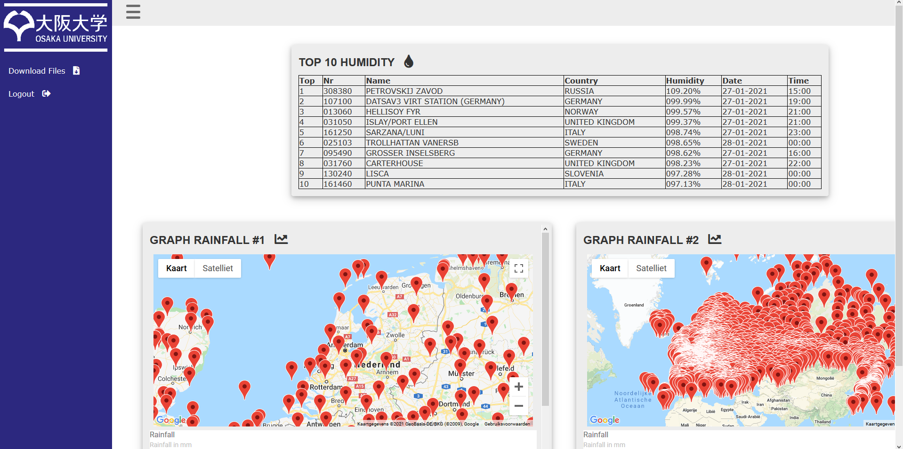

Voor een schoolproject moesten we een applicatie maken die data weergeeft van heel veel verschillende weerstationen voor Japanse onderzoekers.
Het doel van dit project is om te leren over multithreading en networking. Er zijn namelijk 8000 verschillende weerstationen die elke seconde data sturen naar je applicatie die je vervolgens moet verwerken. Daarnaast moest de data opgeslagen worden en netjes worden weergegeven op een website.
Datum: 2021
Weer applicatie

De website moest 2 grafieken hebben waarin je de neerslag kan zien per uur van de afgelopen 48 uur voor elke weerstation. Je kan zelf selecteren via een map welke weerstation je wil bekijken. Je kan alleen weerstationen zien waar de afgelopen 48 uur de temperatuur boven de 13.9 graden Celsius was.
Naast de neerslag moesten we ook de top 10 plekken laten zien waar de hoogste luchtvochtigheid plaatsvond van de afgelopen 4 weken.
Al deze dingen kan je op de website zien en ook kan je de data downloaden die je hebt geselecteerd. Deze website is beveiligd met een gebruikersnaam en wachtwoord.
Voor dit project hadden we 3 virtuele machines waar we gebruik van konden maken.
Machine 1 was waar de weerstation simulator draaide. Deze simulator spuugde constant data uit voor 8000 weerstationen.
Machine 2 ontvangt alle data van machine 1 en verwerkt deze data. Na 1 uur van data verzamelen wordt dit doorgestuurd naar machine 3.
Machine 3 is waar alle data wordt opgeslagen en ook wordt hier de website gedraaid.
Mijn taak binnen dit project was om alle data te verwerken en ervoor te zorgen dat het goed wordt opgeslagen maar daarnaast heb ik ook alle team leden geholpen met hun taken.
Dit was een heel complex project want er kwam heel veel bij kijken daarom kan je het beste onze project document bekijken als je hier meer over wilt weten.
Github repository: https://github.com/brammosso/hanze_project_2.2